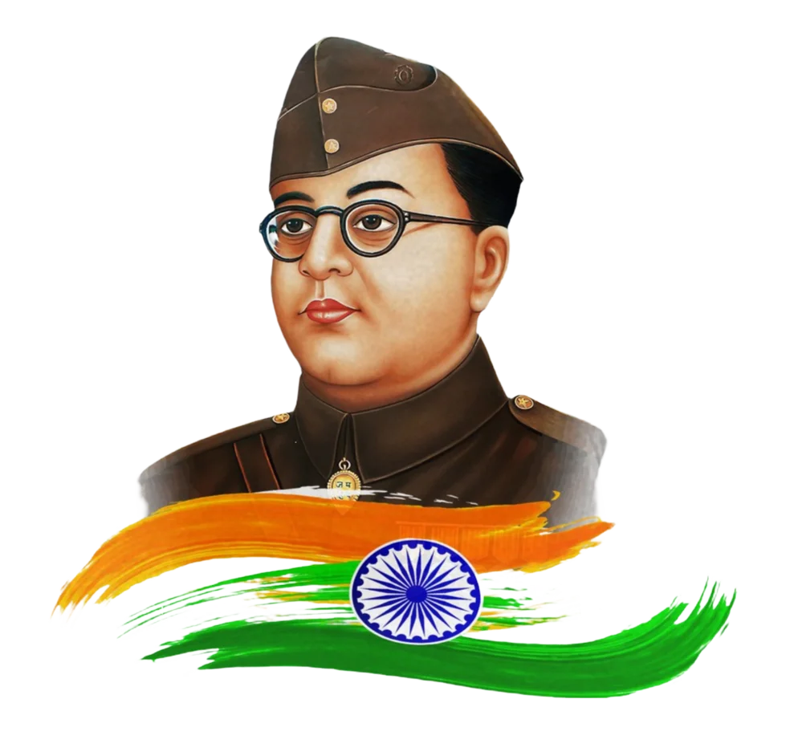

Rabindranath Tagore
MORE...
Netaji Subhas Chandra Bose
MORE...
| IMAGES | DESCRIPTION |
|---|---|
|
Rabindranath Tagore
|
Rabindranath Tagore (1861–1941): Rabindranath Tagore was a renowned Indian poet, writer, and philosopher, born in 1861.
He was the first non-European to win the Nobel Prize in Literature in 1913 for his collection of poems titled Gitanjali.
Tagore's works encompass poetry, music, and art, deeply reflecting Indian culture and spirituality.
He also composed the national anthems of India and Bangladesh. His contributions have left a lasting impact on literature
and the arts worldwide. MORE... |
|

Netaji Subhas Chandra Bose
|
Netaji Subhas Chandra Bose (1897): Netaji Subhas Chandra Bose was a prominent Indian freedom fighter and nationalist leader
who played a crucial role in India’s struggle for independence from British rule. Born on January 23, 1897, he was known for his
fierce patriotism and leadership of the Indian National Army (INA), which sought to overthrow British rule through armed struggle.
Bose’s slogan, “Give me blood, and I will give you freedom,” inspired many Indians to join the fight for independence.
Despite facing opposition from other leaders, his dedication and vision for a free India made him a legendary figure in Indian history. MORE... |